拉脊山
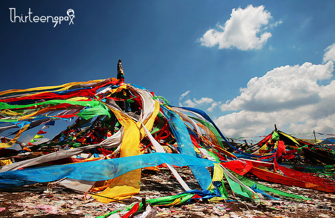
拉脊山(拉鸡山)属日月山支脉，为湟中县与贵德县的界山，为西宁至贵德的必经之地。
拉鸡山的红嘴山草场为贵德县尕让乡的夏季牧场，山上出产著名的冬虫夏草。
夏季时绿草如茵，牛羊成群遍布于此；7-8月时这里有大片油菜花盛开，5月份可以看到许多人挖虫草的情景。
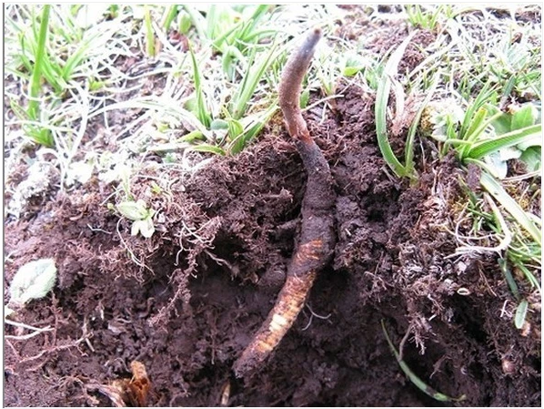
冬虫夏草
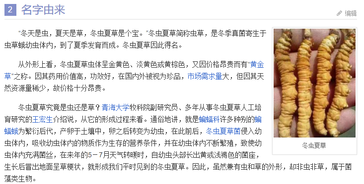
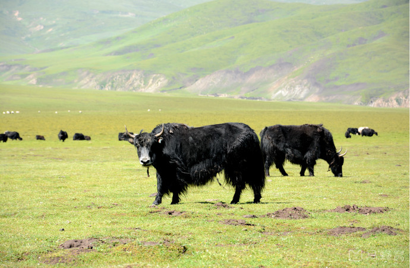
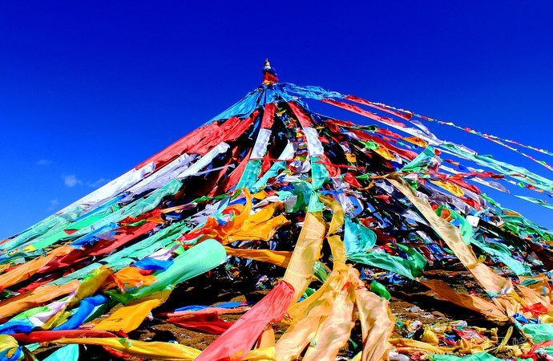
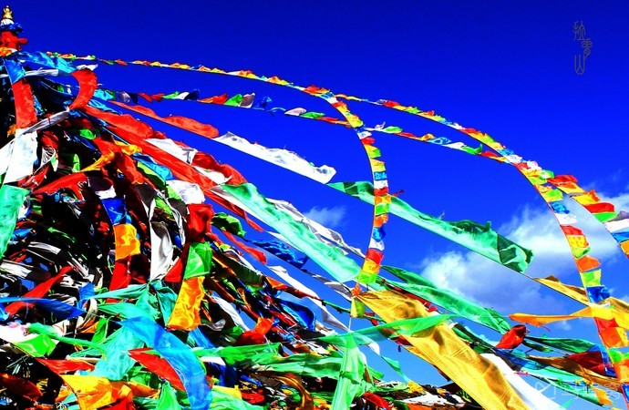
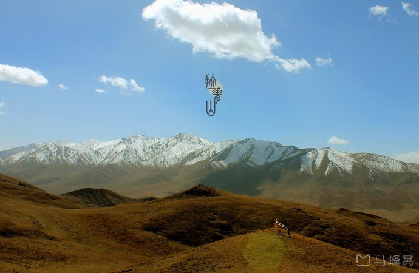
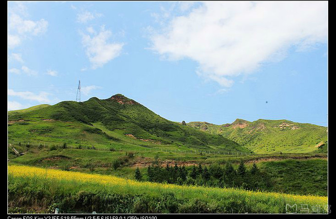
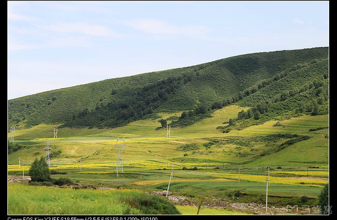
记得调整对比度饱和度等，可以看出云彩遮蔽大地的感觉
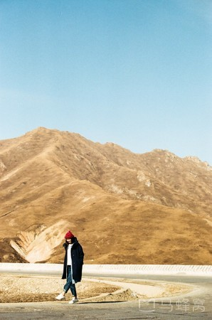
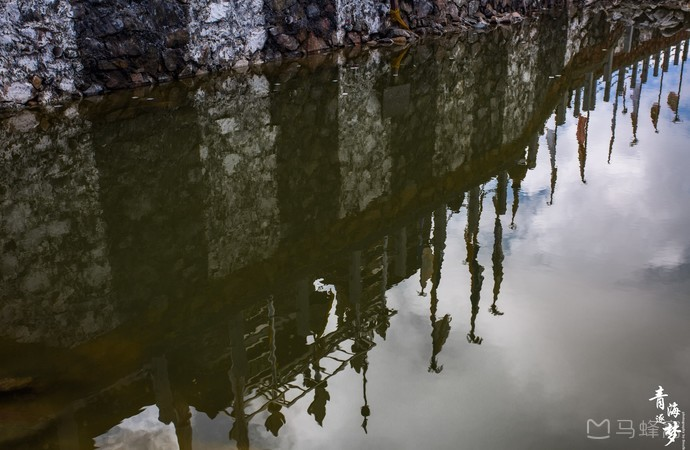
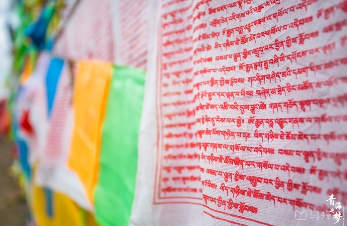
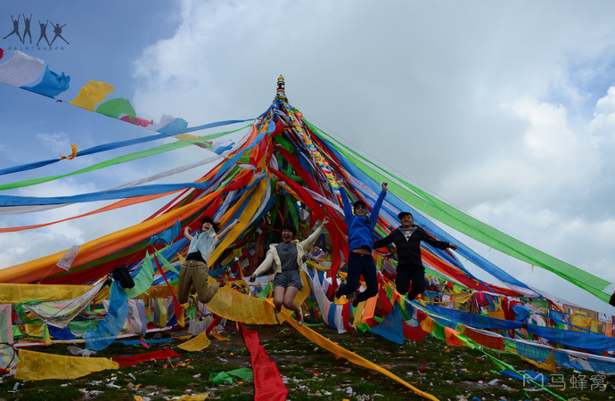
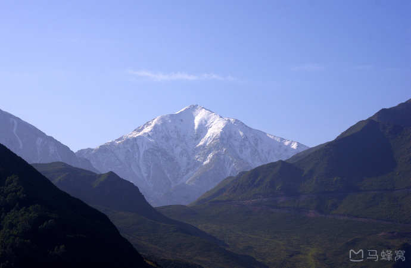
车 盘山 而上的过程远大于行车至山顶的乐趣
延绵不断的山脉起伏，山体线条流畅，律动感强
漫山成片的牛羊，总是给人无限惊喜，
不用怀疑，说不定占领一个又一个山头的土豪，
就是给你牵马拍照的大叔。
山顶打卡牌不远处有藏族人祭祀的地方
感兴趣的朋友可以在这里晃荡一下，但不要待久，因为即便是7月这里也需要裹貂加袄。
（1）从塔尔寺到拉脊山车程1小时左右
（2）门票：0元
（3）游玩时间：不要过多停留，乘车浏览沿途风光最佳
（4）注意事项：海拔较高，尽量不要奔跑跳跃，小心高原反应；山顶气温较低，下车游玩注意保暖。
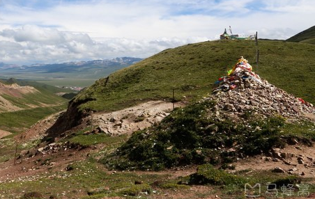
俄博
路盘旋难行，海拔不断上升，经过传说中文成 公主前往 西藏 时途经的日月山，来到拉鸡山顶高师傅说，拉鸡山有个传说，拉鸡是当地的一种动物，尕拉鸡。因为以前山很高，人们翻越不过去，有个放羊的小男孩，跟着羊群来到山顶，发现山顶有一群拉鸡，所以拉鸡山就因此得名了。
海拔3820米，开始有高反的感觉，同伴不明所以，还要山上跳着拍照，不一下就有了强烈反应。垭口顶上有一个“俄博”，藏传佛教中祭祀山神，祈求路途平安的土堆。网上说可带“禄马”（一种祈求路途平安的纸质符咒，类似于汉族的纸钱），塔尔寺门口就有很多卖的。可以看看大把大把的禄马从手中飘起，盘旋在3820米的高空的情景。
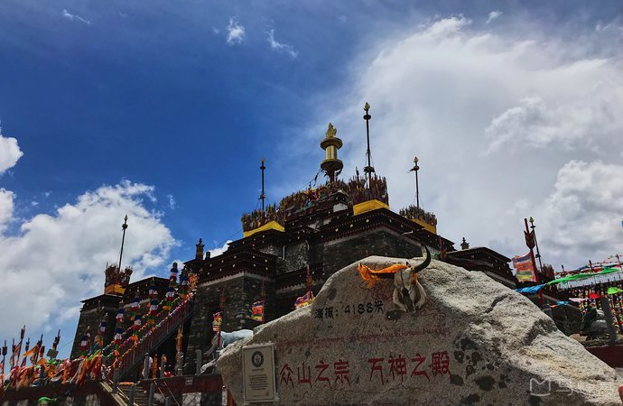
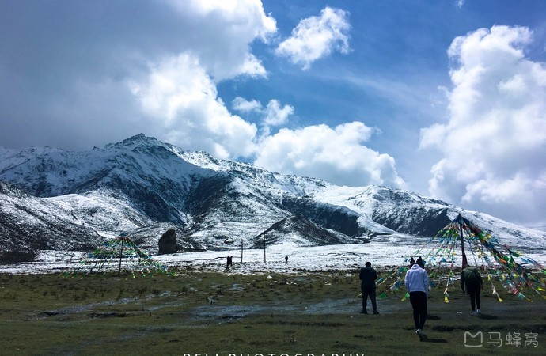
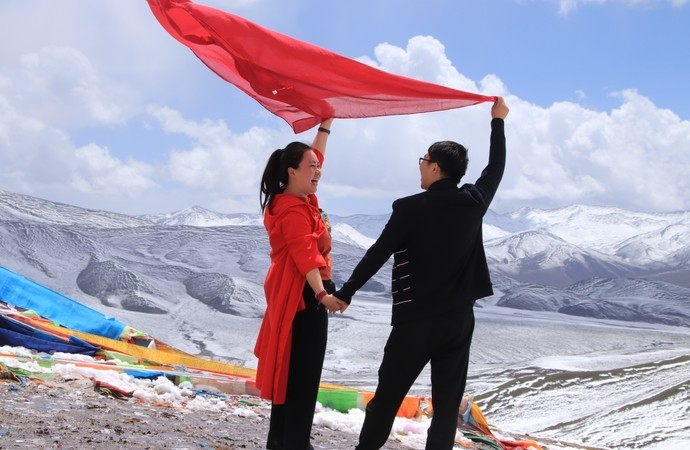
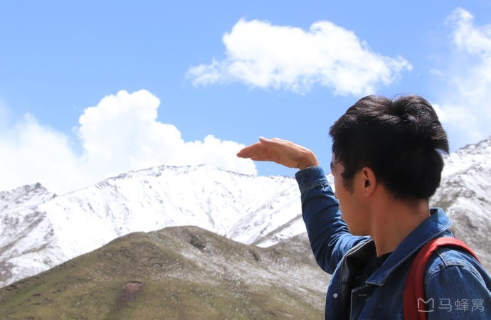
高速服务区和大冬树山都有卖野蘑菇和虫草的当地人，一般司机是不会参与其中的，但是不免也有个别人会“热心”帮你参谋，如果你真的懂，那么买点也不为过，但是如果你不懂，那还是不要轻易询价还价，直接回答“不需要”就可以了。
冬虫夏草